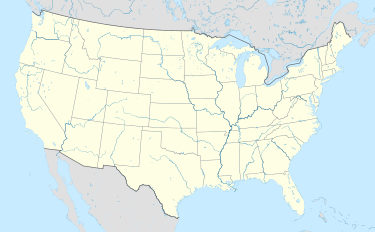
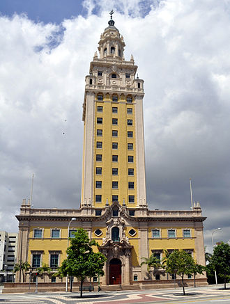
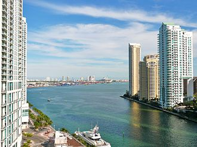
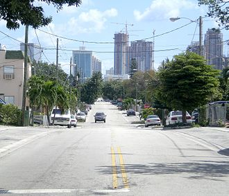

Miami is a city located on the Atlantic coast in southeastern Florida and the county seat of Miami-Dade County.
The 42nd most populated city proper in the United States, with a population of 419,777, it is the principal,
central, and most populous city of the Miami metropolitan area, and the most populous metropolis in the Southeastern United States
|
 |
Miami is a major center and a leader in finance, commerce, culture, media, entertainment, the arts, and international trade.
In 2012, Miami was classified as an Alpha- World City in the World Cities Study Groups inventory.
In 2010, Miami ranked seventh in the United States in terms of finance, commerce, culture, entertainment, fashion, education,
and other sectors. It ranked thirty-third among global cities
|
 |
"America's Cleanest City", for its year-round good air quality, vast green spaces, clean drinking water, clean streets and city-wide
recycling programs.[16] According to a 2009 UBS study of 73 world cities, Miami was ranked as the richest city in the United States
, and the world's fifth-richest city in terms of purchasing power.
|
 |
Downtown Miami is home to the largest concentration of international banks in the United States, and many large national and
international companies.[20][21] The Civic Center is a major center for hospitals, research institutes, medical centers, and
biotechnology industries. For more than two decades, the Port of Miami, known as the "Cruise Capital of the World," has been
the number one cruise passenger port in the world.
|
 |